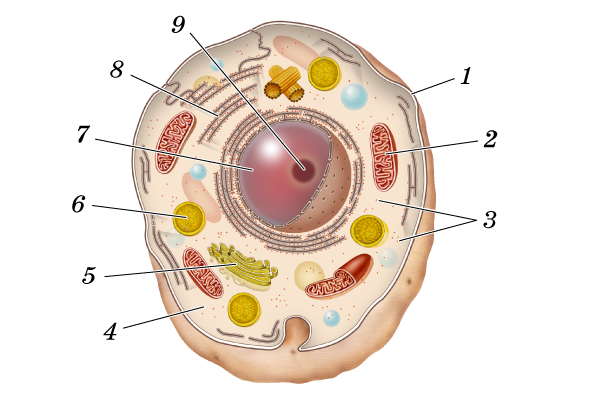

Авторизация участника
Авторизация участникаЗадание 1. Первооткрыватель микромира
Учёный, впервые обнаруживший одноклеточные организмы в воде:
Задание 2. Терминология цитологии
Вставьте верные биологические термины, ориентируясь по опорным начальным буквам.
К М
К М
П
О
Ц
Задание 3. Отличия от растительной клетки
Отсутствие каких органоидов в животной клетке является существенным отличием её от растительной?
Задание 4. Хранение наследственной информации
Какой цифрой обозначен органоид клетки, который несёт в себе всю наследственную информацию?

Задание 5. Энергетические станции клетки
Органоиды клетки, которые преобразуют и запасают энергию для жизненных процессов клетки, называются:
Задание 6. Названия органоидов и их функции
Последовательно нажимайте на плашку с органоидом слева и соответствующую ему функцию справа.
Ядро
Аппарат Гольджи
Вакуоль
Клеточная мембрана
Клеточный центр
Рибосомы
Лизосомы
Эндоплазматическая сеть
Митохондрии
Наследственная информация
Клеточный сок
Синтез белка
Перемещение веществ
Синтез жиров и липидов
Расщепление веществ
Отделяет внутреннее от наружного
Деление клетки
Запас энергии
Задание 7. Регуляция и размножение
Органоиды, которые регулируют обмен веществ, обеспечивают хранение и передачу наследственных признаков при размножении, называются: